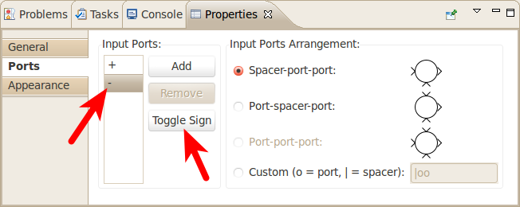
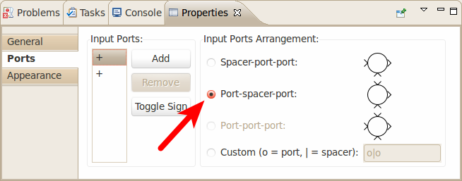
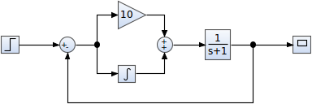
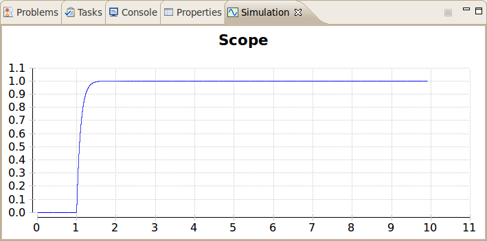
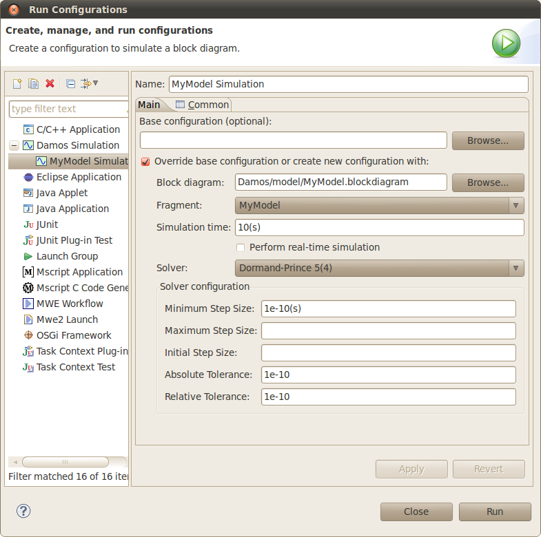

| Getting Started | ||
|---|---|---|
| ||
| Generating C Code | ||
This tutorial provides a step by step walk-through of the basic features of Damos. It will show you how to create a simple Damos model using the block diagram editor and how to simulate the model.

Note: Instead of creating a Damos project, any kind of project (e.g. C/C++) can be used as a container for Damos models. However, if you then open a Damos model the first time, you will be asked if a Damos project nature should be added to your project — which you should agree to. This ensures that model validation is performed automatically.
After clicking Finish, an empty block diagram file will be created in the model folder, and will be opened in a block diagram editor.
In this section we are going to design a simple PI controller with a first-order process.
To add blocks to the block diagram, either drag-and-drop the block from the tool palette onto the diagram, or select a block in the tool palette and then click at the location in the diagram where you want to add the block. The blocks that we are going to need in our example can be found in the Common Blocks drawer of the tool palette. If blocks in the Common Blocks drawer are missing, the Show All palette entry can be clicked to open all blocks of the block library in the Block Library view. Note that you can only drag-and-drop blocks from the Block Library view onto the diagram.
In our PI controller example, we need to add to the following blocks to the block diagram:
After adding the blocks to the block diagram, the block diagram should look as follows:

Note: If you save the incomplete model, errors will be reported in your block diagram. This is due to the fact that we did not connect the blocks yet, and thus the model is still invalid.
When adding new blocks to the block diagram, the values of the block parameters are initialized to default values. To change the block parameter values, you have to open the Properties view (if not yet done). To accomplish this, open the context menu (right-click) of a block and click Show Properties View. In the Properties view, select the tab Parameters.
In our example model, we need to change the following parameters:
Note that you can also set the gain value of the Gain block by clicking (not double-clicking!) on the gain value of the Gain block (do not move the mouse after the click). This direct editing behavior can also be found with other blocks.
Next, we need to change the sign of the second input port of the left Sum block to negative. This is is done in the Ports tab of the Properties view:

Finally, we need to change the port arrangement of the right Sum block to Port-spacer-port. This is is done in the Ports tab of the Properties view:

To create a connection between an input port of a block and an output port of another block, click the port terminal of either block and drag it to the port terminal of the other block. Alternatively, you can use the Connection tool in the General palette drawer to create connections between two blocks. After connecting the blocks, the block diagram should look as follows:

The easiest way to simulate the model is by setting the focus on the block diagram editor, and then clicking the Run ( ) icon in the toolbar. This will create a new simulation run configuration for the focused block diagram, and start the simulation. The simulation result will be shown in the Simulation view:
) icon in the toolbar. This will create a new simulation run configuration for the focused block diagram, and start the simulation. The simulation result will be shown in the Simulation view:

The default simulation run configuration utilizes a commonly used adaptive step size solver (Dormand-Prince 5(4)) using a typical solver configuration. If required, you can adjust the simulation settings in the simulation run configuration dialog (Run > Run Configurations...):

If you need more control over the simulation, you can define a simulation model, which will directly be passed to the simulator by the simulation launcher. See the topic Concepts for more information on the simulation model.
| ||
| Generating C Code |